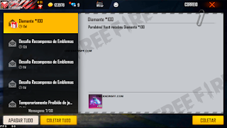
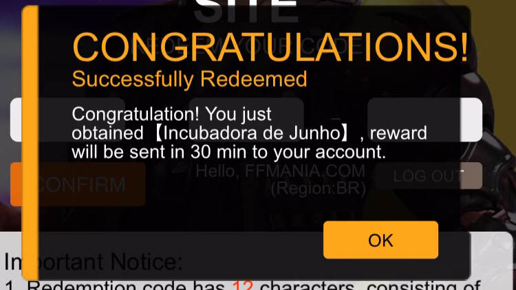

Hoje trago pra vocês um gerador de codiguin para free fire, com vários itens Calça Angelical, Passe de Elite, Incubadora e novos itens do Free Fire. Antes de mostrarmos o gerador de codigos do free fire confira todo nosso texto para aprender a utilizar e ver como funciona esse gerador de codigos do free fire.
A intenção da ferramenta é lhe ajudar a conseguir gerar uma sequência de um código de uma maneira mais simples, e fácil! Talvez você possa tentar e não conseguirá ganhar um ítem, tudo vai depender da sua "Sorte".
CodiguinFF, ou código do Free Fire, é uma combinação de 12 caracteres formada por uma sequência de números e letras e que fornecem aos jogadores a oportunidade de obter vários itens do jogo gratuitamente. Além disso, a única forma de conseguir uma sequência com um código válido é através dos influenciadores, através de ações nas redes sociais e nenhuma ferramenta na internet tem acesso ao servidor da Garena para gerar itens válidos de Free Fire.
ATENÇÃO: Bom com essa ferramenta vocês poderão resgatar/gerar códigos sem limites, sem essa restrição você pode até conseguir resgatar um ou mais códigos. Iremos atualizar essa ferramenta a cada novo item que chegar no Free Fire! Como por exemplo: caso chegue uma nova skin hoje, ainda no dia atualizaremos a ferramenta para que você possa ter um bom uso.
NOVIDADE!
Geralmente o site gera inúmeras sequências de código, mas tentaremos sempre ajudá-los! Após a data de expiração do código, removeremos a opção dele do gerador para facilitar.
Confira o nosso gerador! Para copiar o código basta clicar e segurar em cima, logo após o teclado inteligente do seu smartphone ira selecionar a palavra, exemplo: C0DIG1N23 ai vai aparecer várias opções, você clica em copiar ou recorta, logo após é só testar o código no site oficial de resgate da garena!

Sobre o Gerador de Codiguin FF
O Gerador de CODIGUIN Free Fire (FF) cria uma combinação de 12 números aleatórios e não oficiais da Garena. Sendo assim, quantos mais códigos você gerar, maiores serão suas chances de resgatar um CODIGUIN válido.
Por outro lado, apesar de ser extremamente raro, é sim possível que a combinação de números e letras aqui criado seja válida.
Frequentemente os jogadores tem dúvidas se o Gerador de CODIGUIN pode banir contas de jogadores, mas a resposta para essa dúvida é não! Ao utilizar este recurso, os jogadores não estão burlando nenhuma regra do Free Fire, portanto, fiquem tranquilos e utilize quantas vezes quiser.
Clicando na palavra em azul acima, você vai poder tentar resgatar o código gerado! Se você gostou dessa ferramenta já compartilha para seus amigo, pra que eles também possam utilizar e tentar resgatar.

Para resgatar, basta copiar as letras e números e ir até o site oficial da Garena. Você deverá fazer o login através do Facebook ou da rede russa VK, inserir o código e aguardar até 30 minutos para receber as recompensas em sua caixa de mensagens dentro do próprio jogo. Veja o tutorial completo aqui.